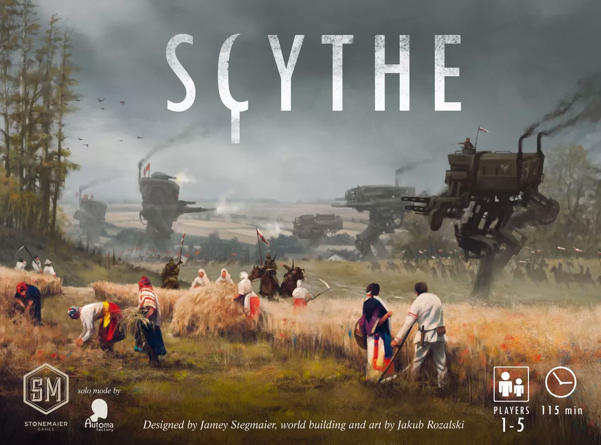

Scythe
Publication Information
- Publisher: Stonemaier Games
- Year: 2016
- Designer: Jamey Stegmaier
- Artist: Jakub Rozalski
Description
It is a time of unrest in 1920s Europa. The ashes from the first great war still darken the snow.
The capitalistic city-state known simply as “The Factory”, which fueled the war with heavily armored mechs, has closed its doors, drawing the attention of several nearby countries.
Scythe is an engine-building game set in an alternate-history 1920s period.
It is a time of farming and war, broken hearts and rusted gears, innovation and valor. In Scythe, each player represents a character from one of five factions of Eastern Europe who are attempting to earn their fortune and claim their faction's stake in the land around the mysterious Factory.
Players conquer territory, enlist new recruits, reap resources, gain villagers, build structures, and activate monstrous mechs.

Summarized Information
- Players: 1-5
- Playing Time: 90-155 Minutes
- Age: 14+
Review
"It is a beautiful game with supported expansions and has the air of friendly competition as well as being able to join in a shared experience of the artwork..."
- steppingbetweengames